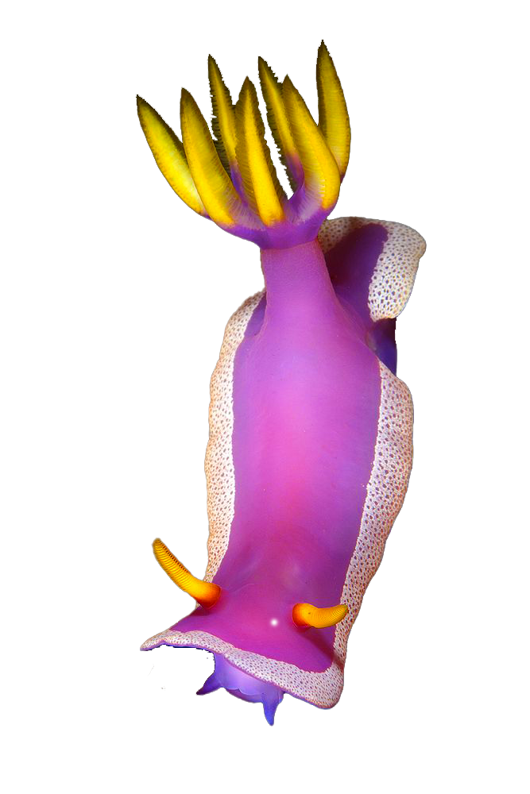
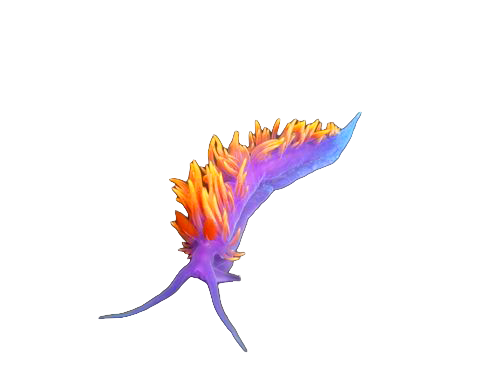
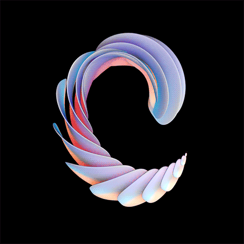

TAXONOMY
Nudibranchs can be split into two main types:
Dorids are recognized by having an intact digestive gland and the feather-like branchial (gill) plume, which forms a cluster around the anus. Additionally, dorid nudibranchs commonly have distinct pockets, bumps, and/or mantle dermal formations, which are distortions on their skin, used to store bioactive defense chemicals.


Aeolids have cerata spread across the back instead of the branchial plume. The cerata function in place of gills and facilitate gas exchange through the epidermis. Additionally, aeolids possess a branched digestive gland, which may extend into the cerate and often has tips that contain cnidosacs (stinging cells absorbed from prey species).
